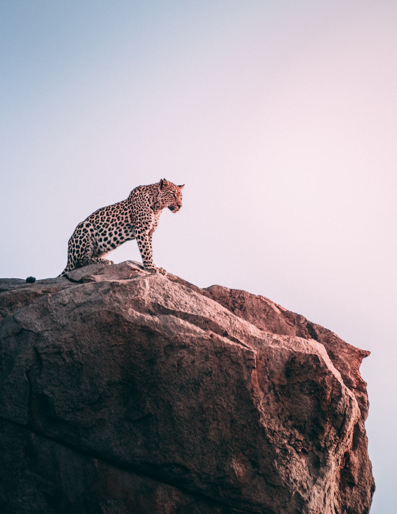

Situated in the central highlands of Sri Lanka, Horton Plains National Park is a UNESCO World Heritage Site known for its unique montane grasslands and cloud forests. While leopards are not as commonly spotted here as in Yala or Wilpattu, the park is home to a significant leopard population. The challenging terrain and diverse ecosystems provide leopards with ample prey and concealment opportunities. Visitors to Horton Plains may witness leopards in a more serene and less crowded setting compared to other national parks.
Located in the northwestern part of Sri Lanka, Wilpattu National Park is the largest national park in the country. The park's diverse landscape, featuring dense forests, lakes, and open grasslands, provides suitable conditions for leopards. Wilpattu is known for its unique "Willus" or natural lakes, which attract a rich array of wildlife, including leopards. The park's expansive terrain offers opportunities for both game drives and nature walks, enhancing the chances of encountering these elusive big cats.
Gal Oya National Park, situated in the Ampara district, is one of the less-explored national parks in Sri Lanka. The park is characterized by diverse ecosystems, including savannahs, grasslands, and evergreen forests. While elephants are a major attraction, Gal Oya is also home to a population of leopards. The park's scenic beauty and the opportunity for boat safaris on the Senanayake Samudraya reservoir enhance the overall wildlife experience, making it a unique destination for leopard enthusiasts.
THREAT: Poaching poses a persistent threat to Sri Lankan leopards, driven by the demand for their body parts and illegal wildlife trade. The consequences involve a direct reduction in leopard numbers, disrupting the delicate balance of predator-prey relationships and negatively impacting the broader ecosystem
Conservation Efforts: Protected areas and national parks, such as Yala, Wilpattu, Kumana, and Gal Oya, serve as crucial habitats under legal safeguards. Additionally, community-based conservation initiatives aim to foster coexistence between humans and leopards through education, awareness, and sustainable development projects. Law enforcement efforts are directed towards curbing poaching and illegal wildlife trade. Strict penalties and increased surveillance contribute to reducing the threat posed by human activities.
Sri Lanka Wildlife Conservation Society
THREAT: As human settlements expand into leopard habitats, conflicts arise. Leopards may prey on livestock, leading to retaliatory killings by farmers protecting their livelihoods. This conflict escalates as leopards adapt to human-modified landscapes. The consequences include a decline in leopard populations, disruption of ecosystems, and strained relations between local communities and wildlife.
Conservation Efforts: Conservationists and wildlife authorities actively engage in research to understand leopard behavior, movement patterns, and genetics. This information aids in developing effective conservation strategies, such as corridor establishment and habitat restoration, to ensure connectivity between fragmented leopard populations.
Wildlife & Nature Protection Society